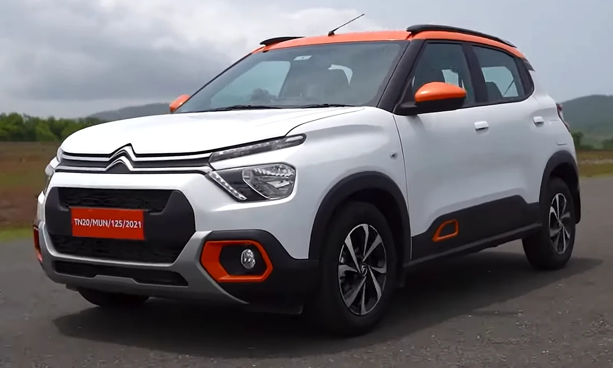
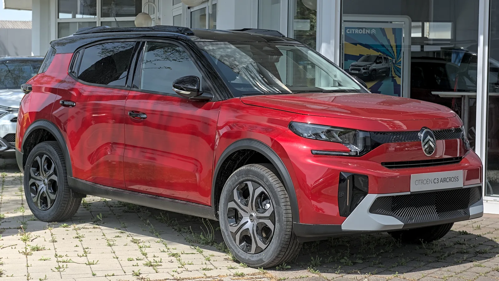
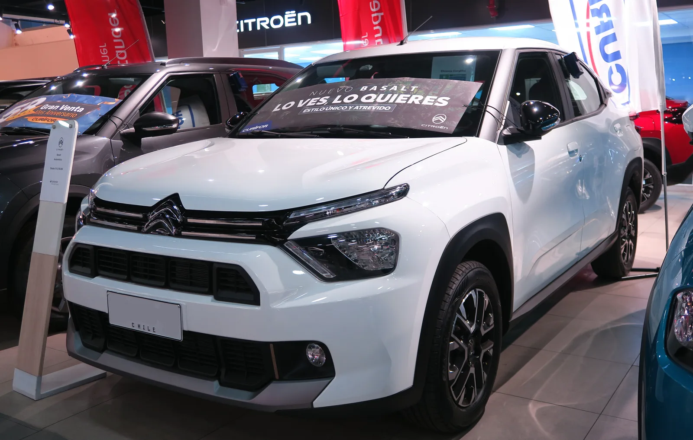
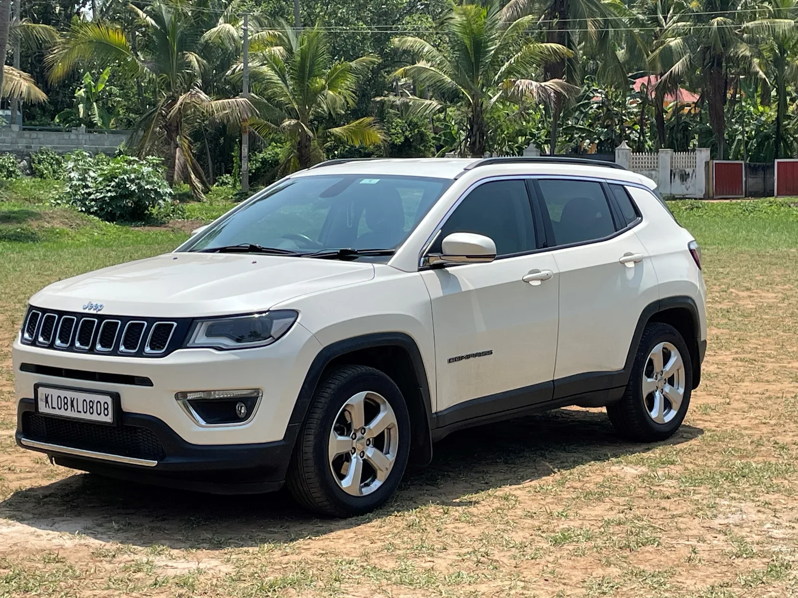

▲ 인도산 시트로엥 C3. 타밀나두 티루발루르 공장에서 생산되는 대표 모델이다 ⓒ DriveSpark / Wikimedia Commons (CC BY 3.0)
스텔란티스가 인도 생산법인의 남은 지분까지 전부 사들였다. CK 비를라 그룹 계열사인 힌두스탄 모터 파이낸스(Hindustan Motor Finance Corporation Ltd, HMFCL)가 보유하고 있던 스텔란티스 오토모빌스 인디아(Stellantis Automobiles India Private Limited, 이하 SAIPL) 지분을 외국인직접투자(FDI) 방식으로 전량 인수하면서, 2017년 출범한 합작법인은 9년 만에 스텔란티스의 완전 자회사가 됐다.
SAIPL은 인도 타밀나두주 티루발루르(Thiruvallur)에 위치한 조립 공장을 운영하며 시트로엥 브랜드의 인도 생산·수출을 전담해온 법인이다. 이번 지분 인수로 스텔란티스는 인도 시장에서의 의사결정 구조를 단순화하고, 생산 확대 계획에 곧바로 착수할 수 있게 됐다.
1. SAIPL의 정체 — CK 비를라와의 9년 합작이 남긴 것
SAIPL, 즉 Stellantis Automobiles India Private Limited는 시트로엥을 인도 시장에 데려온 법인이다. 출범 당시 이름은 PSA-CK 비를라 오토모티브 인디아였으며, 프랑스 PSA그룹(현 스텔란티스)과 인도 CK 비를라 그룹 계열사가 합작 형태로 설립했다.
CK 비를라 그룹은 인도의 대표적인 산업 재벌 비를라 가문의 한 갈래로, 자동차 부품·시멘트·가전 등 다양한 산업에 걸쳐 있는 기업집단이다. 이번에 지분을 매각한 힌두스탄 모터 파이낸스(HMFCL)는 CK 비를라 그룹 산하에서 SAIPL 지분을 보유해온 투자법인으로, 과거 인도 최초의 국산 승용차 브랜드였던 힌두스탄 모터스와 연이 닿아 있는 계열사다.
| 구분 | 2017년 출범 당시 | 2026년 9월 이후 |
|---|---|---|
| 지분 구조 | 스텔란티스(PSA) + CK 비를라 그룹 합작 | 스텔란티스 100% 완전 자회사 |
| 매각 주체 | - | CK 비를라 계열 HMFCL |
| 거래 방식 | - | 외국인직접투자(FDI) |
| 생산 거점 | 타밀나두 티루발루르 공장 건설 | 티루발루르 공장 가동 중 (2021년 양산 개시) |

▲ 시트로엥 C3 아크로스. 티루발루르 공장에서 생산되는 4개 차종 중 하나다 ⓒ Alexander Migl / Wikimedia Commons (CC BY-SA 4.0)
스텔란티스의 글로벌 조직 구조와 인도 사업 연혁은 위키피디아에서도 확인할 수 있다. Stellantis India 항목 바로가기
2. 왜 지금 지분을 전부 사들였나
스텔란티스 측은 이번 인수 배경으로 "단순화된 지배구조"와 "글로벌 전략과의 정렬"을 들었다. 합작법인 구조에서는 대규모 설비 투자나 신차 배정 같은 의사결정마다 파트너사와의 협의가 필요했지만, 완전 자회사 전환 이후에는 스텔란티스 본사가 직접 투자·생산 계획을 결정할 수 있다.
📍 인도는 스텔란티스에게 '수출 허브'다
티루발루르 공장은 내수용 생산뿐 아니라 4개 대륙 8개 수출 시장으로 완성차(CBU)를 선적하는 거점 역할도 하고 있다. 스텔란티스는 인도에서의 제조 경쟁력을 좌우핸들(RHD) 시장과 신흥국 수출을 동시에 잡는 전략의 축으로 삼고 있으며, 이번 지분 정리는 그 전략을 실행에 옮기는 선결 조건으로 풀이된다.
스텔란티스는 그동안 인도에 10억 유로(약 1조 5,000억 원) 이상을 투자했다고 밝혀왔다. 생산설비뿐 아니라 제품 개발, 부품 현지화, 인력 역량 강화 등에 두루 쓰인 금액이다. 완전 자회사 전환은 이 투자를 계속 이어가겠다는 의지 표명이기도 하다.
3. 티루발루르 공장 — 생산량 160% 확대 계획
스텔란티스는 티루발루르 공장의 연간 생산량을 2026년 1만 6,000대 수준에서 2028년 4만 3,000대 이상으로 끌어올리겠다는 목표를 제시했다. 160%가 넘는 증가폭이다. 이와 함께 공장의 직접 고용 인력도 두 배 이상으로 늘릴 계획이라고 밝혔다.
✅ 티루발루르 공장에서 생산되는 시트로엥 4개 차종
· C3 — 신흥시장 전용 플랫폼 'C-큐브드' 기반 소형 해치백/크로스오버
· e-C3 — C3의 순수전기차 버전
· C3 아크로스 — C3 기반의 소형 SUV
· 바잘트(Basalt) — 쿠페형 루프라인을 적용한 컴팩트 SUV
· 이 중 일부 물량은 인도 내수뿐 아니라 중남미·중동·아프리카 등 8개국으로 수출된다

▲ 쿠페형 SUV 시트로엥 바잘트. 티루발루르 공장의 생산 차종 중 가장 최근에 추가된 모델이다 ⓒ RL GNZLZ / Wikimedia Commons (CC BY-SA 2.0)
일부 외신은 2027년까지 연산 5만 대 규모로 늘어날 수 있다는 관측도 함께 전했다. 정확한 최종 목표치는 스텔란티스의 후속 발표에 따라 조정될 가능성이 있지만, 어느 쪽이든 현재 대비 두 배 이상의 증설이라는 방향성은 동일하다.
4. 지프는 어떻게 되나 — 티루발루르와는 별개 법인 구조
이번 SAIPL 지분 인수는 시트로엥 생산 라인에 한정된 사안이다. 스텔란티스가 인도에서 판매하는 또 다른 브랜드인 지프(Jeep)는 마하라슈트라주 란장가온(Ranjangaon) 공장에서 별도로 생산된다.
📍 지프는 옛 피아트-타타모터스 합작 라인에서 생산된다
란장가온 공장은 1997년 피아트(Fiat)와 타타모터스의 합작으로 세워진 뒤, 2017년부터 인도 우핸들 시장은 물론 지프 컴패스의 우핸들(RHD) 수출 전용 생산기지 역할을 해왔다. 이 공장의 법인 구조는 SAIPL과 별개이며, 이번 지분 정리로 직접적인 영향을 받지는 않는다. 다만 스텔란티스가 인도 사업 전반의 지배구조를 정비하는 흐름 속에서, 지프 생산 라인 역시 장기적으로 유사한 재편 대상이 될 가능성은 열려 있다.

▲ 인도에서 생산되는 지프 컴패스. 마하라슈트라 란장가온 공장에서 만들어지며 SAIPL과는 별도 법인이다 ⓒ Sim tcr / Wikimedia Commons (CC BY-SA 4.0)
업계에서는 최근 12개월(2025년 9월~2026년 8월) 기준 시트로엥과 지프의 인도 내수 판매를 합쳐 1만 4,342대 수준으로 집계했다. 이 중 시트로엥이 1만 1,244대, 지프가 3,098대를 차지해 두 브랜드 모두 인도 내수 시장에서는 아직 소규모 플레이어에 머물러 있다.
5. 인도 자동차 시장이라는 무대 — 왜 스텔란티스는 발을 빼지 않았나
인도는 이미 세계에서 손꼽히는 규모의 자동차 시장으로 성장했다. 연간 400만 대를 넘나드는 승용차 판매 규모에 마루티 스즈키, 현대차, 타타모터스, 마힌드라 등 현지 강자들이 촘촘하게 시장을 장악하고 있어, 후발 글로벌 브랜드가 의미 있는 점유율을 확보하기는 쉽지 않은 구조다.
✅ 스텔란티스가 인도 시장에 계속 투자하는 이유
· 내수 성장 잠재력 — 소득 수준 상승과 함께 SUV·크로스오버 수요가 빠르게 늘고 있는 시장
· 우핸들(RHD) 수출 허브 — 인도에서 생산된 지프·시트로엥 모델이 아프리카·중동·동남아 등 RHD 시장으로 수출
· 저비용 생산 기지 — 신흥시장 전용 플랫폼(C-큐브드 등)을 활용한 원가 경쟁력 확보
· 완전 자회사 전환으로 신차 투입 속도와 현지화 전략을 스텔란티스 본사가 직접 통제 가능
다만 시트로엥과 지프 모두 인도 내수 판매량 자체는 아직 크지 않다는 점에서, 생산량 확대 계획이 내수 판매 확대보다는 수출 물량 증대에 무게가 실려 있다는 해석도 나온다. 실제로 스텔란티스는 티루발루르 공장의 수출 비중을 계속 언급해왔다.
6. 요약
스텔란티스가 시트로엥 인도 생산법인 SAIPL(Stellantis Automobiles India Private Limited)의 남은 지분을 CK 비를라 그룹 계열 HMFCL로부터 전량 인수했다. 2017년 합작으로 출범한 이 법인은 이제 스텔란티스의 완전 자회사가 됐으며, 타밀나두 티루발루르 공장은 2028년까지 생산량을 160% 이상 늘릴 계획이다.
지프 브랜드는 이번 지분 정리와 무관한 마하라슈트라 란장가온 공장에서 별도로 생산된다. 시트로엥과 지프 모두 인도 내수 판매량은 아직 크지 않지만, 스텔란티스는 우핸들 수출 허브로서의 가치를 앞세워 인도 사업에 대한 투자를 이어가고 있다.